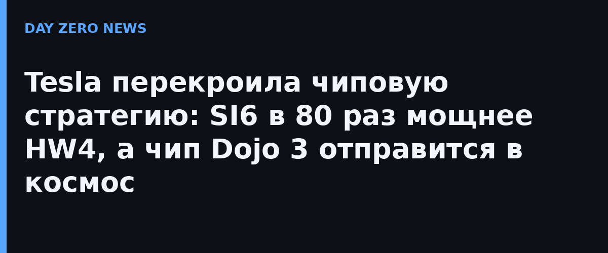

Tesla обновила дорожную карту собственных чипов для автопилота и нейросетей и сменила брендинг: вместо привычной «AI» линейка теперь называется «SI» — Super Intelligence. По задумке Илона Маска, это не косметика, а заявка на отдельное направление «сверхразумного» вычислительного железа, которое будет кормить и роботакси, и человекоподобного робота Optimus, и спутниковые группировки.
Согласно презентации, SI5 должен превзойти нынешний HW4 примерно в 40 раз по производительности, а SI6 — примерно в 80 раз по вычислениям. Появление SI6 при этом отнесено на горизонт 2029–2030 годов. Отдельного официального пресс-релиза на сайте Tesla не было: roadmap представлен в эфире и постах Маска, поэтому цифры стоит читать как целевые ориентиры компании, а не как подтверждённые характеристики готового железа — сами сроки Маск исторически любит сдвигать.
Самая неожиданная часть: Tesla вернула к жизни проект Dojo, который ранее фактически закрыли. Только Dojo 3 пойдёт не в наземные дата-центры для обучения сетей, а «в космос» — как вычислительная база для спутников SpaceX. Для этого Маск анонсировал совместный с Tesla проект TERAFAB с целью выпускать порядка тераватта вычислительных мощностей в год, и около 80% из них отдать именно орбитальным задачам. Поставки критичных чипов Tesla, по сообщениям СМИ, обеспечивается крупным контрактом с Samsung.
Если схема «космические чипы Dojo + спутники Starlink» хотя бы частично сбудется, Tesla первой попытается обучать и исполнять нейросети прямо на орбите, минуя наземные дата-центры с их энергетическими и земельными ограничениями. А пока это красиво нарисованный roadmap: отдельные официальные технические документы Tesla по SI5/SI6 не публиковала, и проверять эти обещания будем, как всегда, по факту кремния в машинах.